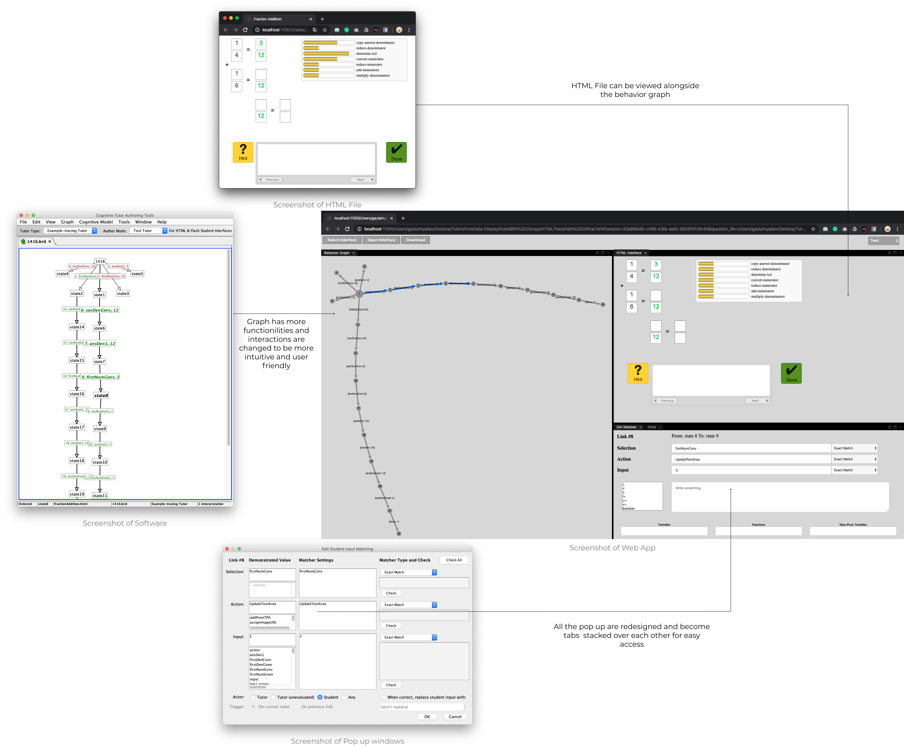
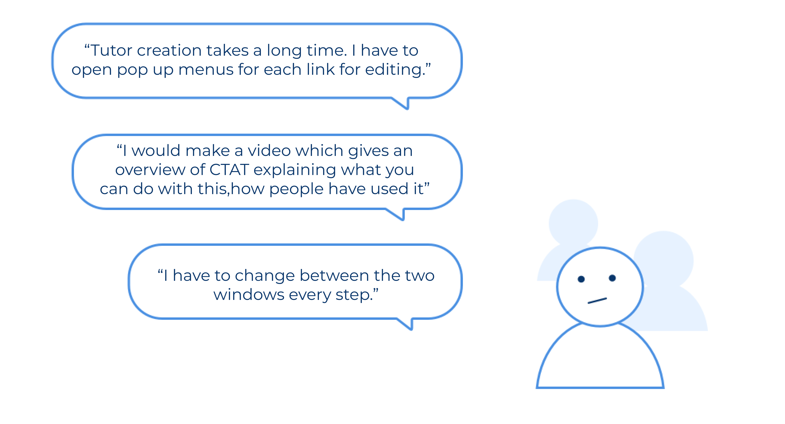
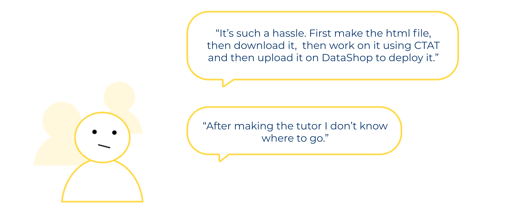
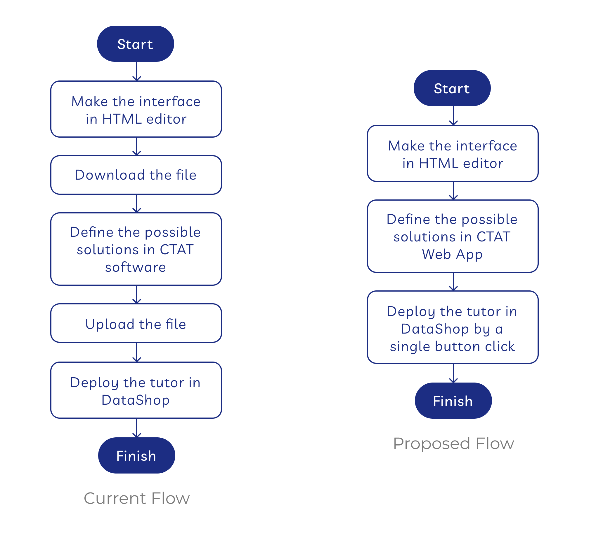
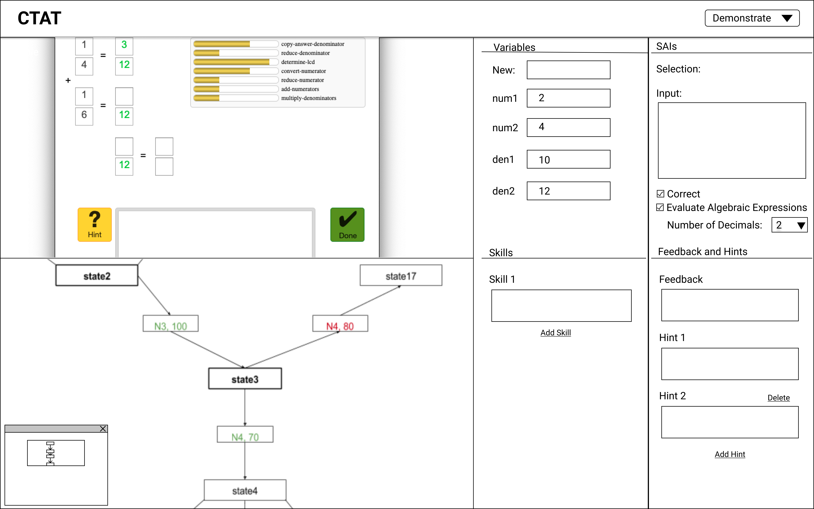
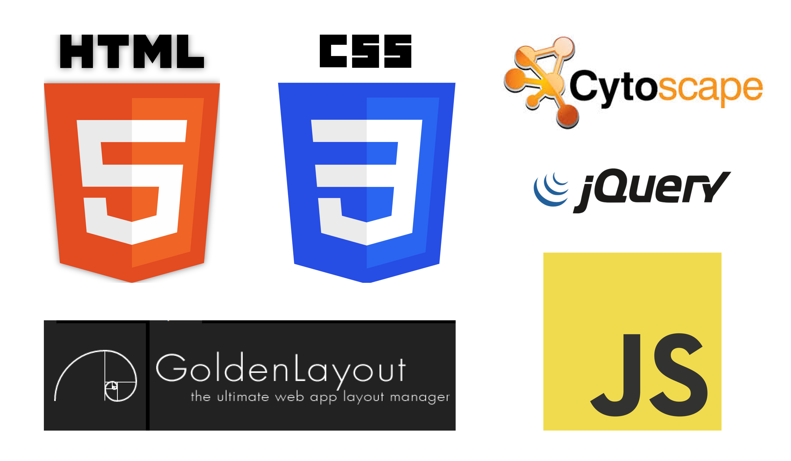
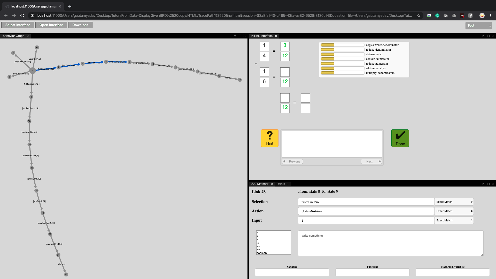

CTAT lets authors build rich learn-by-doing activities through Example tracing tutors which make authoring accessible to a wider range of audience (non programmers and teachers).
This project is done solely by me with the aim to make a web application with a redesigned interface and API's to make the rapid devlopment of cognitive models and tutors more user-friendly for non programmers. As the only person working on this ambitious project (advised by Professor Vincent Aleven), my role is to reimagine the UX and UI for the interface, try out the low fidelity wireframes with some users and then implement the desired functionality in JavaScript.

From having initial interviews with users my prototypes with users, I learned that powerful functionality is useless unless users actually understand the software (CTAT) and have a clear mental model of the data structure.

While the current software is powerful for developing intelligent tutoring software (e.g. tutors can be developed in any domain having multiple solution paths without coding), people without access to CMU resources (even programmers) either give up because the interactions with graph are counter intuitive or are not able to effectively utilize the available features because there are too many pop windows to keep track of.
Another interesting finding from user interviews and tests is that people don't want to develop tutors but find it a very long process. During the interviews, they often cited lack of motivation to actually start from scratch and follow it to the end.

This means:

Through an interactive design process, I was quickly moving between paper and digital prototyping, testing prototypes with users, and co-creating with and getting feedback from my advisor. From each iteration, I learned something valuable. Some helped me make small usability improvements, some helped me make major changes in my design direction.
My initial prototypes explored ways to efficiently develop a tutor knowing what features are available for the users. With research, I experimented with all different ways of organizing the data, from spatial contiguity, to docking.

Some of the final design decisions I made with professor Vincent (to be updated, work still in progress).
The web app is developed in HTML, CSS, JavaScript, jQuery, Cytoscape, and Golden Layout.

If you are interested in this project and want to take a closer look at the code, you can go through this github repository that has all the code I wrote. Feel free to reach out with any questions!
